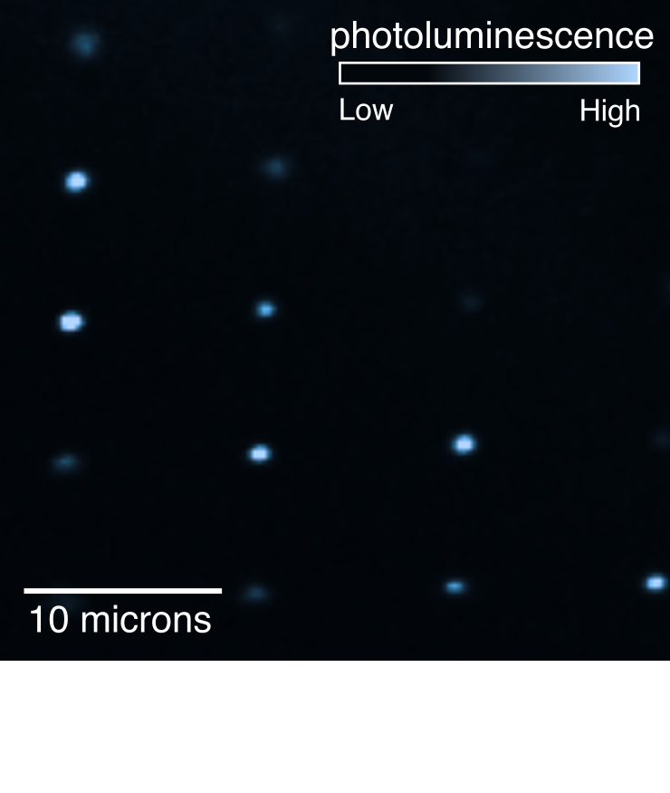
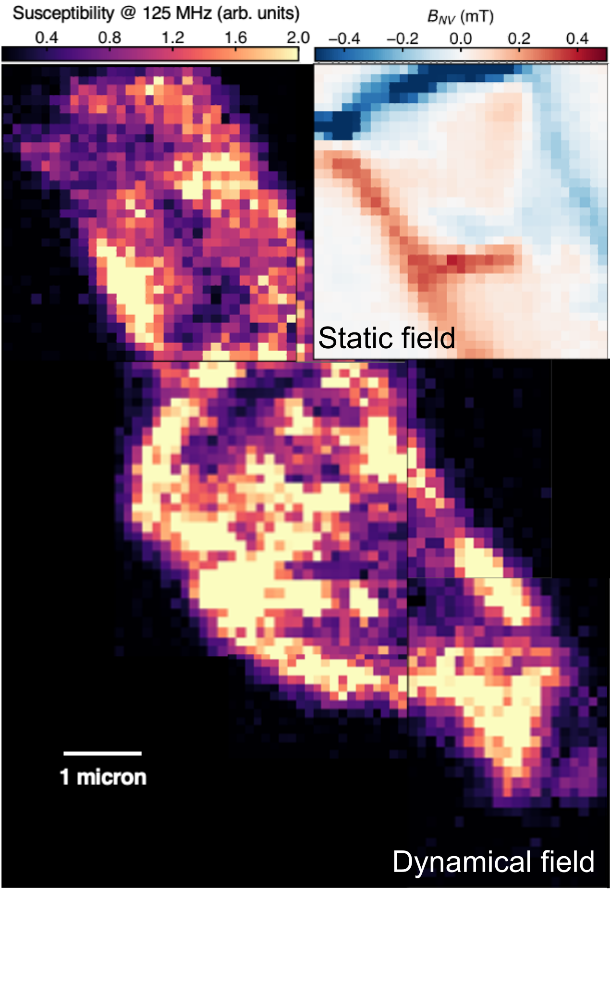
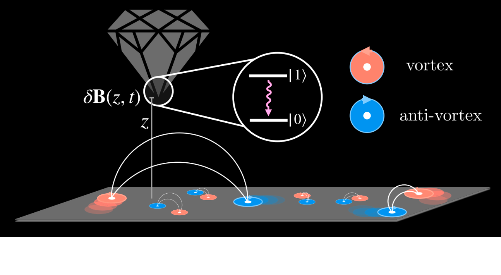
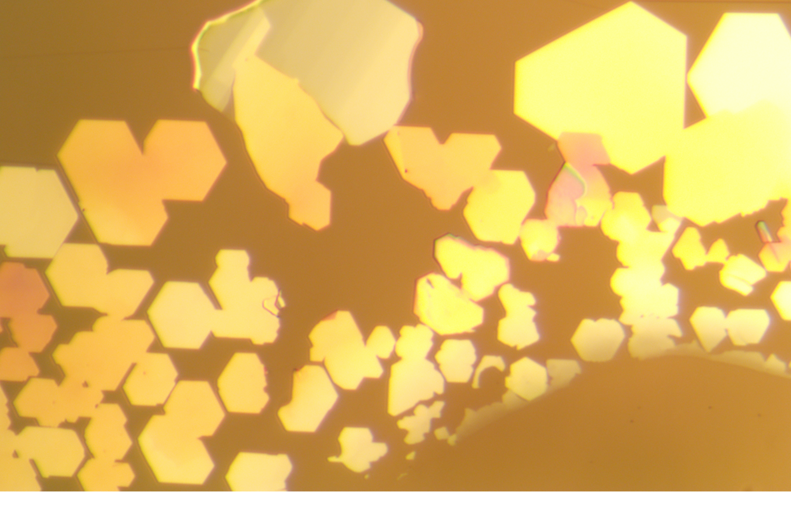

Research Directions
Our research focuses on designing, investigating, and using quantum states of matter in the solid state. This work is highly interdisciplinary, combining concepts and techniques from quantum metrology, condensed matter physics, and solid state chemistry. Much of our work is foundational, but has a variety of potential applications from quantum computing to energy technologies.
Quantum sensors and microscopes

We use extremely precise sensors based on solid state optical spin qubits. The most famous example of such a system is the nitrogen-vacancy color center in diamond, an optical spin qubit that can be operated as a magnetic field sensor with sub-microTesla sensitivity over a wide range of environmental conditions (even room temperature!)
While diamond quantum sensors are powerful, they have drawbacks. Nitrogen-vacancy centers are good magnetic field sensors, but relatively weaker electric field or temperature sensors. Diamond is also expensive and difficult to fabricate, and its surface is littered with noisy dangling bonds. We are therefore exploring a variety of complementary defect complexes in material platforms like III-V semiconductors, metal oxides, and van der Waals compounds.

Our lab integrates quantum sensors into microscopes for imaging properties of samples on sub-micrometer length scales and down to cryogenic temperatures. We work to push the capabilities of qubits as sensors by, for example, developing new quantum control techniques that allow us to measure a wide frequency range of magnetic fields. The combination of nanoscale proximity to the sample, and the wide operating frequency range, together constitute an advanced measurement tool that is unlike any conventional technique.
Many-body quantum physics

Although materials are incredibly complex — containing a huge number of interacting electrons and ions — in many scenarios they behave like a collection of weakly-interacting particles whose properties are dictated by symmetries. This weakly-interacting description serves as the basis of our understanding of many materials, including, for example, silicon — the building block of all modern computers.
Our lab is interested in scenarios where interactions between constituent particles in a solid are strong enough to create fundamentally new phenomena. These strongly-interacting quantum systems appear in a variety of settings, including the parent state of high-temperature superconductors, materials close to a quantum phase transition, and theoretically in low-dimensional spin systems. In addition to pure fundamental interest, such systems have been proposed as a platform for next-generation quantum information processing, memory, and communication.
Solid-state chemistry

Materials synthesis, characterization, and processing drive important findings in an enormous variety of science and technology fields. This is true in our lab as well: realizing a desired property in a material requires careful choice of lattice structure, chemical composition, sample morphology, and interface (e.g. bulk, film, nanosheet, or nanowire and their various combinations). A good fraction of our work is dedicated to synthesizing, processing, and characterizing materials. We are also considering ways to bring in situ sensing and control to the material growth process to enable completely new synthesis methodologies.